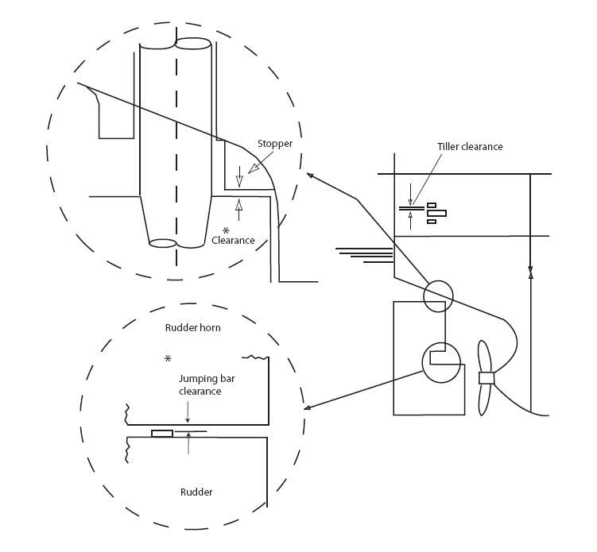

Quick Read | Key Points in 30 Seconds
Start with one core idea: a steering gear survey is not just about confirming that the equipment exists. It verifies that the ship can still steer under normal and emergency conditions, with demonstrable timing, pressure, power supply, and isolation capability.
1. Note Subject and Background
The purpose of this note is to explain how a ship's steering gear is surveyed, tested, verified, and documented under the LR Rules and SOLAS.
| Source Type | How It Is Used in This Note | Chapter / Document Reference |
|---|---|---|
| SOLAS steering gear requirements | Main steering gear performance, auxiliary / emergency steering capability, and tanker steering gear arrangements. | Chapter II-1, Part C, Regulation 29. Sea trial conditions are in 29.3.2; exemption from auxiliary steering gear with two power units is in 29.6.1; existing tanker arrangements are in 29.19-20. |
| SOLAS emergency power supply | One steering gear circuit may be supplied through the emergency switchboard. | Chapter II-1/30.2; the corresponding LR requirement is LR Rules for Ships Pt 5, Ch 19, 5.1.6. |
| LR Rules | Steering gear arrangements, components, power units, sea trials, and test requirements. | LR Rules for Ships Pt 5, Ch 19. Common references include 2.1.4, 3.2, 5.1.6, 6.1, and 7.2. |
| IACS / IMO references | Control system independence, non-traditional propulsion / steering arrangements, and heading information at the emergency steering position. | IACS UI SC94, IACS UI SC242, and IACS Rec.16; for small or special service craft, also refer to LR Special Service Craft Pt 14. |
| Survey Procedures Manual | Installation, sea trials, periodical surveys, certification, and reporting procedures in this note. | Survey Procedures Manual - Surveyable Items - Steering Gear. This note organizes content from the introduction, survey scope, survey prerequisites, first entry, certification, and documentation sections. |
This note is not merely a design-rule summary. It organizes survey procedure requirements used by surveyors, shipyards, manufacturers, and ship staff. The focus is not whether steering gear exists, but whether it retains reliable steering capability under normal and emergency conditions.
| Use Case | Main Content | Practical Focus |
|---|---|---|
| Maker component and equipment survey | Check materials, certificates, components, and test arrangements. | Confirm that the steering gear complies with class requirements before delivery. |
| New construction maker survey | Check steering gear manufacture, assembly, and testing. | Focus on certificates, stamping, component compliance, and manufacturing quality. |
| New construction yard installation survey | Check foundations, alignment, push-up fitting, securing, and functional tests. | Installation quality directly affects sea trials and service reliability. |
| Existing ship periodical survey | Check leakage, wear, hoses, piping, and steering drill records. | The focus shifts to ageing, damage, and functional retention in service. |
| Condition survey | Assess the current condition of an existing ship or installation. | Describe the steering gear type, hard-over test, and correctness of rudder angle indication. |
SOLAS, LR Rules, IACS UIs, and flag Administration requirements may be updated. For actual design, approval, or survey work, always refer to the latest official documents, Administration instructions, and class approval comments.
2. Note Structure
This note follows the steering gear survey process across the equipment life cycle: from rule basis, plan submission, and maker survey to yard installation, sea trial verification, and periodical survey of existing ships.
3. Core Content
1. Emergency Steering Capability and Power Unit Arrangement
The SPM specifically addresses emergency steering power. If a ship is fitted with two or more identical power units, a separate auxiliary steering gear may not be required under specified conditions. LR Pt 5 Ch 19/2.1.4SOLAS II-1/29.6.1
The emergency generator should be capable of supplying one identical steering gear power unit. In other words, emergency operation cannot be merely low-power movement; it must meet the required emergency steering performance. The SPM also states that one circuit may pass through the emergency switchboard. LR Pt 5 Ch 19/5.1.6SOLAS II-1/30.2
The SPM clearly states that a steering gear power unit with two windings and dual rating is not acceptable. If it changes to a lower rating during an emergency such as a blackout, it may fail to meet the auxiliary steering capability requirement. SOLAS II-1/29LR Pt 5 Ch 19/6.1
2. Ship Types and Steering Gear Arrangements
The Expected arrangements table (Table 2.2) in the SPM is a key reference, summarizing performance and redundancy requirements for cargo ships, tankers, and different steering gear arrangements.
| Ship Type | Steering Gear Arrangement | Power Units | Performance | Practical Notes |
|---|---|---|---|---|
| Cargo Ship | Main steering gear + auxiliary steering gear | One or more | Main steering gear: 65° / 28 seconds; auxiliary steering gear: 30° / 60 seconds | The SPM notes that this arrangement is now less common. |
| Cargo Ships | One steering gear with two or more power units | Two or more | All power units together achieve 65° / 28 seconds | Very common. |
| Tankers > 10,000 grt | Two independent power actuating systems | Two or more identical units | Each system must achieve 65° / 28 seconds | Strict requirement, but the SPM notes that it is less common. |
| Tankers > 10,000 grt | Two interconnected systems with automatic isolation | Two or more identical units | All power units together achieve 65° / 28 seconds | Common arrangement; the key point is automatic isolation. |
| Tankers > 10,000 grt < 100,000 dwt | Concession arrangement with one power actuating system | Two or more identical units | All power units together achieve 65° / 28 seconds | Must comply with IMO guidance and automatic isolation requirements. |
Steering gear safety is not judged by the number of installed components alone. It must be confirmed that the ship can retain sufficient manoeuvring capability during failure, isolation, power loss, or hydraulic abnormality. For tankers, higher risk means stricter redundancy and automatic isolation requirements. Existing tanker arrangements must still comply with the relevant SOLAS Regulation 29 provisions to maintain the validity of the Safety Construction Certificate. SOLAS II-1/29.19-20
4. Performance Requirements and Key Figures
The SPM cites SOLAS requirements: steering gear tests should generally be carried out at the ship's deepest seagoing draught and maximum ahead service speed. If this cannot be demonstrated during sea trials, alternative verification may be accepted to the satisfaction of the Administration. LR Rules place the trial requirement under Rules for Ships Pt 5, Ch 19, 7.2 Trials. SOLAS II-1/29.3.2LR Pt 5 Ch 19/7.2
| System | Performance | Verification Purpose |
|---|---|---|
| Main Steering Gear | 35° to 30° on the other side, total 65°, within 28 seconds. The SPM explains that this test is carried out with the main steering gear in operation. | Verify steering capability under normal maximum service conditions. |
| Auxiliary Steering Gear | Typically 30° (15° to 15° on the other side) within 60 seconds, verified at half speed or 7 kn; used to verify emergency steering capability after main steering gear failure. | Verify that basic manoeuvring capability remains after main steering gear failure. |
| Relief Valve | The maximum working pressure during sea trials should not exceed 80% of the set pressure. | Avoid normal steering operation approaching relief-valve opening conditions. |
The main steering gear sea trial is not 35° to 35°. It is 35° to 30° on the other side, so the total rudder angle is 65°, not 70°.
5. Installation, Fitting, and Sea Trials
1. Rudder Jumping Clearance
The rudder jumping clearance illustration in the SPM explains that, to prevent steering gear damage when the rudder jumps upward, the rudder lift / tiller clearance must be greater than the clearance between the rudder and the fixed anti-jump arrangement.

The engineering meaning is that when the rudder jumps upward due to external force, sea conditions, or vertical movement, the fixed anti-jump arrangement should limit the movement first, rather than transmitting impact directly to the tiller, rudder stock, or steering gear itself.
The SPM also notes that sealing arrangements for certain oscillating piston actuators should be checked against the applicable rules. At the piston rod, the external pressure boundary typically uses a single pressure seal plus a single wiper seal; this arrangement may be accepted as meeting duplicated sealing requirements. Component surveys should also confirm that stamping and certificates comply with the rules. LR Pt 5 Ch 19/3.2
2. Ram Type Steering Gear | Installation Flow
The installation and testing flow in the SPM shows a typical ram type steering gear installation and test sequence, which can be used as a yard site checklist. The shipyard / manufacturer should also check the warning plate on the tiller top; it should state the approved maximum fitting pressure, which must not be exceeded during installation.
Check the contact condition between the upper rudder stock cone and the tiller.
Fabricate the steering gear foundation assembly.
Carry out rudder stock push fitting to the tiller.
Install the rudder stock nut and locking tab.
Use the rudder stock as the datum for alignment.
Carry out chocking, resin chocking, hardness checks, and holding-down bolt checks.
Confirm relief valves, automatic isolation, alarms, and control functions.
Verify steering efficiency, rudder movement time, pressure, leakage, and emergency functions.
Complete the First Entry Report and Sea Trials Data.
3. Sea Trials | Survey Focus
Steering gear sea trials do not only measure rudder movement time. They also verify hydraulic integrity, control reliability, redundancy and isolation, emergency power supply, communication, and indication systems.
6. Periodical Survey of Existing Ships
For existing ships, the survey focus shifts from design and installation compliance during new construction to ageing, wear, leakage, support, functional testing, and record verification.
| Inspection Scope | Main Check Items | Risk Implication |
|---|---|---|
| Steering gear compartment access | Check mechanical parts, handrails, and non-slip surfaces. | Affects maintenance and emergency operation safety. |
| Hydraulic piping | Check cracks, flange connections, stress concentration, and insufficient support. | Vibration may cause fatigue cracks and leakage. |
| Flexible hoses | Check damage and date markings; renew if necessary. | Aged hoses may burst during high-pressure steering operation. |
| Mechanical linkages and securing | Check pins, securing arrangements, and holding-down arrangements. | Looseness or wear may cause inaccurate control or structural failure. |
| Functional tests | Test main steering gear, auxiliary steering gear, emergency steering gear, and telemotor gear. | Confirm the system still meets steering function requirements. |
| Steering drill records | Check SOLAS steering test drill logs and confirm related navigation equipment and system requirements. | Deficiencies may affect statutory survey and PSC inspection results. |
| Pre-1986 ship caution notices | If applicable, confirm that a caution notice is posted at the bridge steering control position for operation with two power units running simultaneously. | When control abnormalities occur, crew need to know how to stop pumps one by one to restore steering command control. |
| Telemotor / auxiliary or emergency steering | Test telemotor gear where fitted; auxiliary or emergency steering systems, where provided, should also be tested. | Avoid a steering chain outside the main system being unavailable during a real emergency. |
The SPM places functional testing of existing ships, drill records, caution notices, telemotor gear, and auxiliary / emergency steering tests under Scope and Conduct of Survey 5.1.6 to 5.1.10. The drill-record section refers to SOLAS Chapter V Regulation 19.2. Where a Chief Engineer self-inspection arrangement is used, the SPM lists only steering gear pumps as items that may be checked by the Chief Engineer; other steering gear surveyable items are outside that scope. SOLAS V/19.2
Special Equipment: Azimuth Thruster
If the ship is fitted with azimuth thrusters, their steering systems should be checked together with the propulsion system survey, with particular attention to pinions, wheel rims, tooth wear, and tooth flank surface degradation.
Special Equipment: Rotary Vane Steering Gear
Some rotary vane steering gear seals are prone to wear. If the surveyor suspects that the steering gear no longer satisfies SOLAS Regulation 29, the owner or operator should contact the manufacturer for further advice. SOLAS II-1/29.3.2
The SPM recommends not opening the vane unit outside factory conditions. If opening is unavoidable, strict precautions are needed to prevent contamination of the hydraulic system. If the unit cannot be sent to the factory, temporary screening should be arranged on site to make cleanliness as close as practicable to factory conditions. Periodical checks of A.E.G. type rotary vane steering gear also include an Engine Survey / CSM interval not exceeding 5 years, an approximately 7 bar pressure limit during hard-over operation, hard-over to hard-over time, and relief valve lifting pressure.
7. Technical and Regulatory Implications
The SPM refers to LR Rules, SOLAS, and IACS documents, showing that steering gear is safety-critical equipment. Steering gear failure may affect both class certificates and statutory safety certificates. LR Pt 5 Ch 19SOLAS II-1/29IACS UI SC94
Two pumps or two power units do not automatically mean compliance. It must be demonstrated that, under the specified draught, speed, power, and failure conditions, the steering gear can still meet the required rudder movement time and steering capability.
Tanker requirements, interconnected systems, automatic isolation, and caution notices for older ships all show that steering gear redundancy must avoid common-cause failure, such as shared hydraulic contamination, control conflict, or failed isolation. IACS UI SC94IACS UI SC242
Keyless tiller contact, rudder stock push-up, foundation welding, resin chocking, holding-down bolts, alignment, and pipe supports all affect steering gear reliability under high load, high vibration, and rapid steering conditions.
8. Common Pitfalls and Points to Watch
| Potential Confusion | Correct Understanding | Practical Risk |
|---|---|---|
| Do two pumps automatically mean compliance? | Not necessarily. Performance, isolation, power supply, and control redundancy still need to be confirmed. | The equipment count may be sufficient, but steering may still be unavailable in an emergency. |
| Main steering gear test angle | It is 35° to 30° on the other side, not 35° to 35°. | Sea trial records or exam answers are easily written incorrectly. |
| Dual-winding, dual-rating design | The SPM clearly states that it is not acceptable. | Output may be insufficient in an emergency and fail to meet auxiliary steering requirements. |
| Relief valve set pressure | It is not the normal working pressure. Maximum sea trial working pressure should not exceed 80% of it. | Frequent relief valve lifting may indicate design or adjustment problems. |
| Engineer's blue contact check | It should be thin and even, not mixed with oil, and applied using a roller. | Applying it too thickly may produce false contact readings. |
| Opening rotary vane steering gear | It should not be opened casually outside factory conditions. | Hydraulic contamination may cause valve sticking, pump wear, and seal damage. |
9. Summary and Review Points
This note organizes the class survey logic for steering gear from manufacture, installation, and sea trials to in-service surveys. Its core purpose is to help readers understand how to confirm that a ship has reliable and verifiable steering capability under both normal and emergency conditions.
After sea trials, the SPM requires submission of the Report on Installation of Machinery, Form 2095 under First Entry Procedures. During new construction, the fitting curve should be available on board. If a statutory survey finds that the main or auxiliary steering gear cannot operate properly and permanent repair cannot be completed at the survey port, a conditional Safety Construction Certificate, conditional Cargo Ship Safety Certificate, or conditional Passenger Ship Safety Certificate may be required.